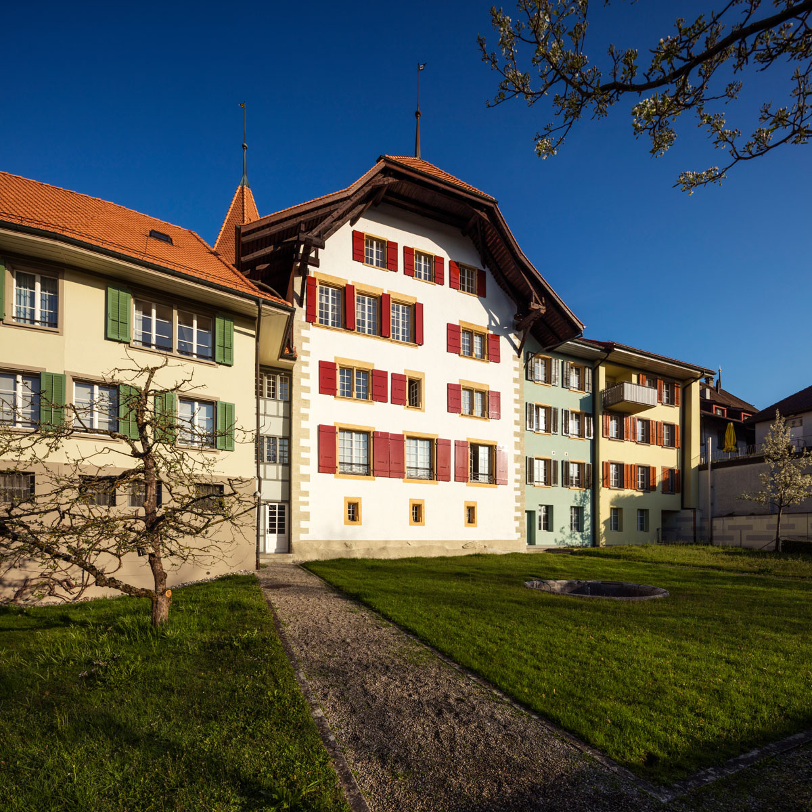
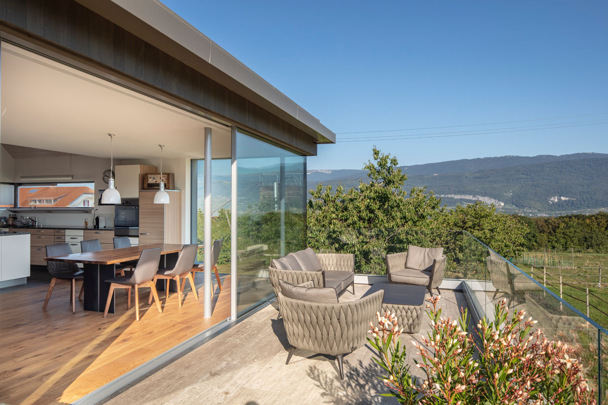
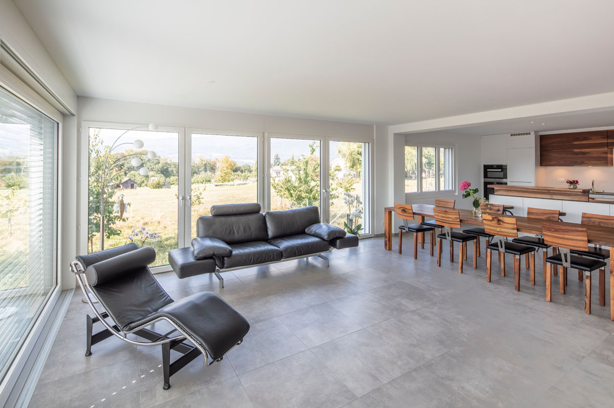

Basic
Erstberatung und Analyse der wichtigsten Räume mit konkreten Empfehlungen zu Anordnung, Licht und Materialisierung.
Anfragen→Zwei Themen prägen unsere Arbeit über das klassische Bauen hinaus: Feng Shui als Haltung zu Raum und Energiefluss — und Baubiologie mit Re-Use als konsequenter Umgang mit Material und Ressourcen.
Beide Ansätze integrieren wir auf Wunsch bereits in die Projektplanung, damit sie den Entwurf prägen und nicht nachträglich angefügt werden.

Mit Feng Shui schaffen wir Wohn- und Arbeitsräume, die Energiefluss, Funktionalität und Ästhetik in Einklang bringen. Jeder Entwurf berücksichtigt klare Prinzipien für ein Umfeld, das Kraft spendet, Konzentration fördert und langfristiges Wohlbefinden unterstützt.
Auf Wunsch integrieren wir die Grundsätze des Feng Shui bereits in die Projektplanung.
Erstberatung und Analyse der wichtigsten Räume mit konkreten Empfehlungen zu Anordnung, Licht und Materialisierung.
Anfragen→Ganzheitliche Feng-Shui-Begleitung von der Planung bis zur Umsetzung — inklusive Grundriss, Aussenraum und Detailkonzept für alle Räume.
Anfragen→
Mit Re-Use-Strategien nutzen wir Bauteile und Materialien erneut, reduzieren Abfall und minimieren den ökologischen Fussabdruck.

Baubiologisches Bauen setzt auf natürliche, schadstoffarme Materialien und eine ökologische Bauweise.
Soll Ihr Projekt diese Prinzipien tragen?
Kontakt aufnehmen→